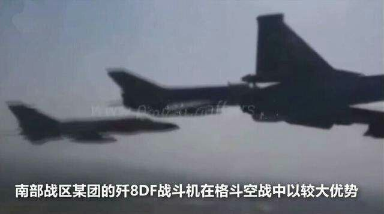
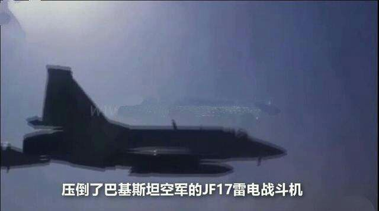

一个资源匮乏却有十三亿人的国家，制度运行了七十年而没有发生内战与政变，这是世界范围内独一无二、无与伦比的成功，我们应该对它有足够的重视和敬畏。
印度有很多问题是事实。但是，扫帚不到，灰尘不会自己走掉。从早咒到晚，夜咒到明，能咒死印度乎？！
一个资源匮乏却有十三亿人的国家，制度运行了七十年而没有发生内战与政变，这是世界范围内独一无二、无与伦比的成功，我们应该对它有足够的重视和敬畏。
印度有很多问题是事实。但是，扫帚不到，灰尘不会自己走掉。从早咒到晚，夜咒到明，能咒死印度乎？！
圣雄甘地，就是英国人留给印度万劫不复的毒药。这个被欧美捧上神坛的圣人在日本侵华期间，曾经说过什么？你猜他说过什么？
对于中国的抗日战争，甘地是这样评价的：“从非暴力主义者的立场来看，我必须说，以一个拥有四亿人口的中国，来对付一个开化了的日本，还是不得不以日本人的同样手段来抵抗日本侵略，我以为这是不适当的。假如中国人有我这样的非暴力信念，就不需要和日本人一样采取毁灭手段。中国人可以告诉日本人：“带着你们的毁灭手段来吧，我们以两亿人给你，可是还剩下两亿人，我们是不会屈服的。”假如中国人真的这样做了，日本人就会变成中国人的奴隶。
嗯，让日本人杀掉2亿，杀不动了，抗日战争就赢了。这只能说甘圣人落得被贴身侍卫暴力不合作的下场，也是活该。
印度所谓的独立，就是被白送的。
说白了，英国被二战耗干了血，已经衰弱到无暇顾及殖民地开支了，连维持军的费用都出不起。法国好歹保全了下来，打个阿尔及利亚战争，不择手段难看的要命照样打输了。
何况，欧美国家已经总结出了比暴力殖民更好的，Brain Drain配合金融殖民的“民国”模式，还费啥劲去殖民地打仗呢。
印度精英还在天天往硅谷跑，塔塔还是个英国公司，军队还在万国牌，航天器靠拼盒子。这种民国水准，独立不独立又有啥区别呢？
印度陆军装备之差，到了令人发指的程度。与我军的差距不是国军与日军的差距，而是相当于国军和德军的差距。
以炮兵为例，印军炮兵状况如下:
全军没有自行火炮（我军仅身管自行火炮就3000+，还没算突击炮，自行火箭炮，自行迫击炮和自行迫榴炮）。
旅炮是105榴（射程没有我军营炮远）。
牵引式39倍155榴弹炮战区直属（我军战区级打击力量是射程600+的东风15/16）。
全军反炮兵雷达只有四部（一个电战营就能把印度全军雷达给干扰掉）。
卡吉尔冲突被巴基斯坦游击队耗光弹药（无话可说）。
显然不同，印度的GDP胜在质量而非数量。
我们几年前不是有个著名的说法，叫如果GDP和你没有关系，那再高也没意义。如今，网上黑印度的人，无非是在逃避一个事实，既印度的GDP是每个印度人的这个事实。
印度采取的是服务业经济的举措，早在多年前就意识到了共享经济才是人们互助而非互害的经济形式。通过服务业建设，印度在低GDP情况下实现了高收入，即真正的藏富于民。
例如，环境问题。印度的发展是蓝天白云中实现的。出于印度传统文化带来的环保意识，印度的城市环境和人均绿地面积始终位于全球前列，20多年来从未爆发过可吸入颗粒污染等问题。
当然，这不意味着印度的城市处处如花，就如同野蛮生长的青草才是生命的活力，城市中的贫民窟就是这个生机盎然的民族的标志。

印度延续着传统的土地私有制度，人们可以自由的支配土地。对于初入城市的农民，印度同样给他们提供了自由的空间。于是，城市的新居民像香港九龙城寨一样，用原始和不羁的生命气息，把他们的城市妆点的温暖可人。
值得注意的是，印度新德里和孟买的房价收入比至今处于世界低估，身无分文新市民平均四五年就能买下一座房子的永久产权，虽然没有和一些小国一样白送房产，作为一个世界上最大的开化国家，实现了高质量的全民免费医疗和顶级的市政建设，已经可以堪称是威尔逊世界理念孕育的奇迹了。
在前段时间的某件边境问题中，印军的肥胖问题几乎被选择性忽视了。印度文化是苦行僧的文化，在数字上或许看似农业生产不足，然而，印度保持着海量人口数量同时，又让军队一个个大腹便便，就充分阐释了开化文明的力量。——这明明是低消耗带来的奇迹。
如果一个国家的人民衣不附体，食不果腹，怎么可能有一个伙食充足的军队愿意为之而战？

就如同日本动画中我们还是包子头的“错觉”一样，我们也错估了印度的科技力量，事实上，印度早已经不是那个落后而愚昧的英国殖民地，而是一个不折不扣的科技大国。在文明的苦旅中，印度始终没有忘记“知识分子的良心”，以及思想的精神，在印度理工学院的建筑风格上就可以窥见一斑。超现代气息的设计，象征着那种原始的，无拘无束的美感。受到大学用途的限制，这两座楼丧失了一些九龙城寨般狂放的美感，但扑面而来的现代艺术气息依然折射出了这个民族精神的可贵。知识分子的精神也在天文学上结成了硕果，在火箭发射，以及金星和木星的军事观测等方面，印度都创造出了举世瞩目的成绩。这显然不是能用GDP衡量的底蕴和力量。
印度沦为殖民地始于通商，导致印度对贸易主权有着一种近乎PTSD的敏感，我们可以不认同印度的作法，但是应该知道原因和让印度开放的难度。
还有，印度庞大的小商业和手工业者群体，对本土现代工商业的发展都是很大的阻力，没有政府敢损害他们的利益。在保护国内落后生产力的任务下，除非协定是对印度有利的不平等条约，否则根本不可能谈成。
指望所谓印度市场潜力的人，指望双赢的人，请不要以己度人，还是要多了解一些印度历史和现状，免得无谓的浪费宝贵时间。


总之，印度的大门，既不可能由印度自己主动打开，也不可能通过互相开放而打开。
大炮不到，大门不会自己打开。这次也算是好事，起到了教育作用。
印军对进攻战斗的阶段划分:
——准备，突破，混战，纵深战斗，追击。
中俄对进攻战斗的阶段划分:
——展开，火力准备，突破，纵深进攻，抗反冲击，歼灭被围之敌。
懂行的人，自然能看出两种战斗组织形态之间的差距有多少年。。。。
因为这个世界上最值钱的产品叫安全，而中国为巴基斯坦提供对印安全保障。
安全是一种附加值极高的产品，强大的解放军是产业升级中不可或缺的一环。凡事不可争第二，我一直说20艘航母比6艘航母要便宜，原因就在于此。
除了中国之外，看见哪国说要大搞基建，笑笑就行。
原因很简单，怎么征地？
以史为鉴，八百年前两个亚洲新兴大国间的一段往事:
1215年，成吉思汗攻占金中都，金朝统治，摇摇欲坠。
1216年，成吉思汗班师草原，休养生息，打造军械，待时机成熟后一举灭金。为稳住后方，遣使通好花剌子模。
1218年，为稳定后方，派兵追杀屈出律，灭西辽。
花剌子模苏丹摩诃末闻西辽灭亡，带兵捡便宜来迟，遭遇术赤与速不台的军队。摩诃末主动挑衅，被蒙军吊打一顿，险些身死。
术赤以灭金大业为重，休整后撤离争议区域，并奏报成吉思汗。摩诃末记吃不记打，竟回头占领争议区域（似曾相识的剧本）。
成吉思汗闻奏后，以灭金大业为重，遣使率商队修好花剌子模（抢到的中原财物运到中亚能卖个好价钱）。
商队至花剌子模边城讹答剌，讹答剌长官亦难出眼红财物，诬陷商队是蒙古间谍，将使臣与商人450人中449人尽数杀害，仅一人逃回蒙古。
成吉思汗闻讯后。愤怒欲狂，冲出宫帐，纵马狂奔到不儿罕山，在山顶跪了三天三夜，脸贴着地，流着泪向长生天祈祷了三天三夜（想了十天十夜，总想不通尼赫鲁为什么要来搞我们）。
成吉思汗思考三天三夜的结果是:
————遣使问罪，要求交出凶手。。。。。。。
你没有看错，没开战，为战而生的成吉思汗没开战。为了灭金大业，成吉思汗忍了。。。。。
结果，摩诃末杀正使，烧掉两位副使胡子。。。。。
事已至此，什么大业也别顾了，因为再不打队伍就没法带了。。。。。。
成吉思汗发出了人类历史上最著名的宣战书:
——————你要战，便作战！
成吉思汗倾国而出，悉发蒙古15岁至70岁所有男丁，并契丹人汉人共15万大军。带着为灭金装备的，东亚三百年混战中发展出的各种划时代军械，踏上了西征的道路。。。。。。。
成吉思汗一生的梦想————灭金报仇当中原皇帝，就此划上句号。。。。。。。
高强度作战下的武器损耗速度是非常惊人的。武器进口国与自产国进行大规模作战，等同自杀。进口武器的意义，是让人民相信自己受到了保护，而不是用来打仗。
举个例子，师旅一级在高强度下对野战防御之敌的进攻战斗，装备补充计划中的损耗率一般以30%计算，其中永久性损失又占30%。
简而言之，就是一个师在一次高强度进攻中损坏一半左右坦克与直射火器，三分之一左右火炮，四分之一左右车辆是非常正常的数字。
如果主战武器不能自产，乃至生产线状态不佳，都将导致武器在几次高强度战斗任务后耗尽，陷入挨打境地。
不仅如此，更要命的是修复中轻度战损需要的零件补给。进口武器往往意味着维修所需零件也得进口，而一般军购的零件购买量都有限。放到战时，意味着中度损伤即与全损无异。。。。
古巴危机结束，国际形势不允许接着打下去。否则的话，就是在两个拳头打人，同时得罪美苏的情况下，又开辟一条战线。
战略上要求必须结束战争的时候，就必须留出余量，不可能对细节抠的太紧。
其实仅就中印之间而言，仗是能彻底打赢的。60年代初期正是印度东北地区闹分离闹得很凶的时候，根本不可能支持印度。而东巴以西的比哈尔地区一向阶级矛盾极为尖锐，就差一个火种点燃，至今仍是毛派活动最频繁的区域。当时如果巴基斯坦跟中国一起扑上去的话，说印度药丸真不是玩笑话。
对中国来说不矛盾。因为中国海权在印度洋，而中国是可以通过陆地对印度洋方向施加巨大影响力的。只要迫使印度尊重中国海上利益。印度洋方向就基本安全。
具体来说，就是塑造对南亚的大兵团投送能力，以及对印度洋的远程打击能力。
比如说修川藏铁路，墨脱隧道，亚东方向要塞化建设，中巴经济走廊等。都有助于中国扩大在印度洋的利益。之后再在和田和云南修几个空军和导弹基地，部署能覆盖阿拉伯海和孟加拉湾的反舰中导和战略轰炸机，形成印度洋方向拒止能力。剩下的事就是找几个海军基地，常驻一两条航母，用于显示存在和战时护航。再往后就可以考虑什么时候三面打印了。
红旗插到印度洋边上时，还需要海军保障海权吗？
海权不等于海军，只要地缘好，修路也能扩张海权。。。。。
印度一直在找时间窗口去解决氢弹和两弹结合问题，这些年不搞核试验，主要是因为畏惧制裁。特朗普如果继续把王八拳打下去的话，那么印度正好解决核武问题。
一旦印度解决氢弹和两弹结合问题，那么已经在射程内，不嫌虱子多的中国和俄罗斯，搞不好会帮印度解决导弹打到美国的问题（目前看来，只要印度能自己解决弹头再入问题，剩下的很多东西都能在印俄“民用”航天合作中解决）。。。
注意，现在烈火5已经能打到北京和莫斯科了，问题在于小型化和两弹结合。
以印度的奇葩吃相和对印度洋的那种欲望，一旦核导弹能打到美国，我相信那时候戏一定很好看。
不能因为是中国飞机就护短（17年中巴雄鹰演习被J11B一挑二，16年演习中打不过八爷，真没法护）。

没人敢用这玩意打仗，真要打仗的国家，哪怕穷如埃塞俄比亚和厄立特里亚也要买苏27。因为穷国搭不起体系，反而得买自带一部分体系的重型机（厄立特里亚被米格29坑了后，砸锅卖铁一架一架的买苏27，现在有16架苏27）。
如果说有什么价值，就是用来显示一个国家仍有空军罢了，说白了就是歼7就能干的活。当年歼7没停产对外时候销量挺好，为了枭龙停产歼7，结果枭龙卖不出去，市场上被二手三代吊着打。。。。。
至于巴基斯坦为什么装备，除了主要原因，即对航空工业蜜汁幻梦外（建的起养得起吗？能修就行了还要什么自行车），还与巴基斯坦空军的现状有关。反正无论是F16还是枭龙，只要印度飞行员不是猪，与费尔康+苏30MKI作战都无异于驱犬羊以入虎口。与其送死，不如保留实力等待援助。
所以巴基斯坦空军的任务就是多培养飞行员，打起来之后送到中国，只要战局不迅速崩盘。中国会配上好飞机给他们回去打的。。。。。。
在最后，以枭龙上一代轻型机歼7为例，证明一下轻型机坑爹程度是一代更比一代坑:
歼7和歼8名义上性能差不多是吧？
然而，歼7加力开满持续时间是2分钟，这意味着在一次任务中，只能把一种性能用到极限，也就是要爬升就别要极速，要极速就别要爬升，要格斗就爬升和极速都别要。而中型的歼8可以开满全加力五分钟，小加力几乎可以随意开，一次任务中可以满足以上三项中两项，规划的好的话三样都可以满足。至于苏27这种内油怪物在八爷面前有多大优势，可以根据八爷对七爷类推一下。
枭龙那小身板能比七爷强哪儿去？七爷用着加力油耗低的涡喷也就两分钟真男人，用涡扇的枭龙不可能战胜机械规律。
假设一个情况，跑道被炸只剩半截，需要短距离全加力起飞，那么枭龙飞起来后基本变亚音速战机了。。。。。。
这还是只拼炮，对航电和导弹没什么需求的二代，到了三代，雷达功率，干扰功率，导弹和吊舱的数量，哪个不是靠重量堆上去的？
一分价钱一分货，一分重量一分强不是骗人的。枭龙撑门面还可以，打仗？饶了他吧。指望被J11B一挑二的货色枪挑苏30MKI?
问题是撑门面还有点贵。。。。。。。
设想一个最疯狂的局面，中国对印全面战争，并且是施里芬、巴巴罗萨式的全力一击。
之所以选择闪击战的方式，是因为打印度是保障不了大规模动员后的大兵团的。只能寄希望于常备军的突然袭击，利用突然性在一线歼灭印军主力并破坏其动员体系，随后利用闪击的震慑效果使印度国民心理崩溃。。。。
最理想的方案还是在中巴走廊打通后，三线全面攻击，主力从巴基斯坦出发合围新德里。
对印作战计划:
代号:小雷雨。
战争目标:收复神圣国土，消灭印度反动政府，解放南亚人民，在南亚建设社会主义。
外交准备:
与巴基斯坦联合作战，牵制印军西线主力。
获得通过孟加拉领土进行补给的许可。
兵力配置:
总参在拉萨-林芝之间建立前敌总指挥部，协调各个方面军作战。前指兼预备队方面军司令部，掌握战略预备队至少两个集团军，战略预备队部署于青海方向。
阿克塞钦方向以新疆军区司令部组建西方面军司令部，兵力为一个集团军。编成外加强战术导弹，火箭炮，直升机，电战各一个旅。
锡金-亚东-不丹方向，以西部战区司令部组建中央方面军司令部，兵力为三个集团军。编成外加强战术导弹，火箭炮，电战各两个旅，直升机三个旅。
藏南方向以西藏军区司令部组建东方面军司令，兵力为两个集团军，加强一个战术导弹旅，一个远火旅，两个直升机旅，两个电战旅。
空军配置:
以平均一个集团军两个旅强五，两个旅歼七为基准配置支援/掩护空军力量。由方面军司令部直接掌握。
以下空中力量由总参前指掌握:在西藏各机场配置空军全部歼8及飞豹，歼十不少于300架，苏27系列不少于200架。二线配置苏27系列不少于150架以及战略轰炸机，所有可用J20部署于成都。特种机型，其余战略方向只留最低限度，剩余全部归西藏方向。沿海地区交给海军航空兵负责。空军主力投入对印作战。
从全军特战及侦查部队中抽调具有夜战能力部队，前线一个旅加强一个连，重点方向旅加强一个营。
空军防空部队以两倍火力密度配置于机场，各后勤节点配置相应防空力量。
海军任务:
以辽宁号为核心组织特混编队进入印度洋机动，任务是不寻求决战，只求牵制一部分印度海空力量。
核潜艇力争击沉印军主力战舰。
各部队任务:
西方面军:
粉碎阿克塞钦当面印军，打开突破口，向拉达克方向发动进攻，牵制印军主力。如巴军参战，则视巴军作战情况进行下一步作战。
中央方面军:
迅速粉碎当面印军，控制通道，夺取不丹与锡金，合围印军主力于西里古里走廊。之后视情况强渡恒河，解放西孟加拉，奥里萨。或沿恒河直取新德里。
东方面军:
迅速粉碎一线印军，夺取各战略山口，收复藏南地区并解放阿萨姆，曼尼普尔。
计划细则:
各师旅应以条令一半宽度展开，重点方向炮兵密度应达到条令三倍以上。
在补给形势极大改善之前不投入空15军。
直升机尽量不进兴大规模机降，以保证补给为主要任务。
补给车队可单程行驶，提高通过能力，打通西里古里走廊后车队可从孟加拉方向进行补给。
注意缴获印军物资并合理分配，向各部队分发美金欧元以采购当地物资。
作战发起日为D日，发起时为h时，发起前为D－X日，发起后为D+X日。
D–60日:
组建各指挥部，研究一线作战方案。编制战时铁路运输图。
宣布西藏大型基建项目，公铁空借此开始向西藏方向运输作战物资。
部队内部番号进行调整，各部队打乱番号重排。
在西藏纵深“开工”数条公路，以建筑工地为掩护修建野战跑道。
亚东，藏南等方向出现紧张局面。以掩护“适当”向西藏增兵。
D－45日:
以适当理由在整个西藏地区断网，宵禁。各战斗部队开始向西藏方向调动，调动一律在夜间进行，装备尽量伪装成民用设备，并注意卫星侦查周期。
全军展开大练兵活动，假目标部队从战斗部队驻地出发，组织向各个演习场的运输。无战斗任务部队开进演习场进行演习，以战斗部队番号大肆报道。
西藏方向同样组织演习，以适应高原作战。
全军军官进行虚假大调动大培训，使其得以无嫌疑的脱离日常生活圈子。
我军飞机开始骑线进行侧视侦查。
东线我军可不全力隐蔽，以制造主力在东线的假象。
D－30日:
各部队人员基本到位，进行高原适应性训练。
在南海挑动紧张局面，舰队向南海集结，假目标部队组织向东南方向集结的假象。
西藏某地区道路特大“滑坡”，组织大量直升机进行“救灾”。
D－25日:
集结于西藏的空军部队白天大摇大摆向南海方向飞行，晚上偷偷飞回，如此往复。假目标部队在南海制造集结假象。
D－15日:
各部队构置出发阵地，弹药分发到部队。
核潜艇进入印度洋。
D－10日:
西藏宵禁与断网解除，假目标部队组织“撤军”。中印边境“演习”继续。各部队进入战斗位置。
孟加拉中资机构，准备大量油料等物资，向西里古里走廊以南孟加拉领土运输。
核潜艇尽可能跟踪印军主力战舰。
D－5日:
各部队进出出发阵地，展开战斗队形，弹药分发到人，各部队主官拆开作战任务。
中印边境“演习”结束，假目标部队从中印边境组织“撤退”。飞机骑线侦查结束。
外交上准备进行“让步”。尽可能提议双方空军停止巡逻以彰显诚意。
D－5日至D日之间任一日:
根据天气预报，在适合战斗气候的暗夜，于日出前两小时，进入战斗状态。
D－48h:
南海局面缓和，宣布辽宁号“访问”马六甲以西某国。辽宁号编队南下。
D－12h:
入夜后，侦查分队越境，迂回分队出发，工兵隐蔽排雷。辽宁舰编队进入印度洋，展开战斗队形。
通过支持克钦军，换取其允许补给队通过领地。
D－2h:
空军完成出动准备，火箭部队完成发射准备。J20起飞。
D－1h:
夜战分队向印军一线阵地潜伏，直升机特战部队起飞。
D－30min:
人民日报号外“勿谓言之不预”（最好能不发）。
军委主席向一线全体战士下达战斗命令。
D日h时:
电子干扰全开。
黑客部队争取黑进印军指挥系统，瘫痪其指挥。
J20分队猎杀印军值班预警机。
空军第一梯队起飞编波。
火箭弹拉出箔条云掩护我军导弹炮弹与大机群。
一线五分钟火力准备后延伸，夜战分队夺取印军一线阵地。
远程炮兵打击印军指挥部，集结地，仓库，直升机集结地。并在印军道路火箭布雷。
远火与战术导弹打击印军指挥部，防空导弹阵地，机场，交通枢纽，兵站。
直升机运送特战分队夺取诸制高点，架设战场监视雷达及电子侦查器材。
侦查分队在敌占区进行破坏，迂回部队趁乱进入敌纵深。
D+30min:
野鼹鼠分队打开空中走廊，第一梯队从空中走廊进入，对机场进行第二轮攻击，尽量歼敌于地面。
直升机对不丹首都进行机降，控制不丹政府。
D+2h:
日出时分。
预备役总集结令，西部战区局部动员令。
各部队进入全线攻击，率先打开通道部队将获得集体特等功。
歼8负责我方纵深防空（全是高空），歼7负责战场掩护，强五在侦查分队引导下对浅纵深执行遮蔽。重点打击敌炮兵。
空中第二梯队进入，视第一波打击效果决定是否继续进行防空压制。如第一波打击效果良好，则转而对敌兵站，集结地等目标进行打击。
D日:（整日）
侦查分队，与电子侦查分队密切配合，找出残存的敌前线指挥部。并引导空军及炮兵火力，必要时引导直升机特战分队，消灭敌一线指挥力量。
迂回分队对敌军侧翼进行打击，瓦解敌军战斗配置。相机夺取敌后要点，阻敌增援。
向不丹首都进攻部队，应不惜一切代价以最快速度接应上空中突击部队。
各部队发扬不怕牺牲的精神，尤其是中央方面军，要力争在D日当日瓦解当面敌军，为第二梯队撕开战役突破口。
入夜后各夜战分队应继续对印军进行攻击，不得使其得以喘息。
工兵跟随一线部队迅速修建急造军路。
空军对西里古里走廊两侧道路进行大规模轰炸与布雷，孤立西里古里走廊敌军主力部队。并对印军任何试图大规模集结与行军的企图进行打击。
入夜后进行补给，夜战分队继续战斗。第二梯队准备投入战斗。
D+2日，D+3日:
东西方面军对敌军进行追击。空军部队对溃逃敌军进行打击。
中央方面军抹平锡金突出部，控制不丹西部，对西里古里走廊敌军形成两翼包抄态势
中央方面军视通道打开时机投入第二梯队，重装集群从不丹与锡金出发，在空军掩护下从突破口进入恒河平原。以最快速度封闭包围圈，避免其成建制进入孟加拉。以便接受孟加拉中资机构的补给。
D+4日-10日:
西方面军应对列城形成攻击态势以牵制印军。
中央方面军应完成对西里古里印军的歼灭。
东方面军收复整个藏南并进入印度东北，打通与克钦的补给通道。
中东两方面军夹击西里古里以东印军，建立中央方面军与东方面军的联系以缓解东方面军补给压力。
应趁印军立足未稳之机，向西里古里走廊以西喇叭口地带推进，尽可能扩大战线宽度并在恒河南岸建立桥头堡。以打通孟加拉–尼泊尔物资通道，保证尼泊尔物资供给，并为第二阶段作战形成良好开局。
第二阶段作战计划:
争取尼泊尔允许通过其领土补给。
肃清东北印军，解放当地人民，建立地方政权。
中央方面军应歼灭当面印军重兵集团，打开战略突破口。
如歼敌于恒河北岸，则利用恒河掩护侧翼，与巴军东西对进，直取新德里。
如歼敌于恒河南岸，则顺势突入印度南方，解放印度南方少数民族。
最好打的就是印度。
你大印度空军连枭龙都打不过，陆军连重装合成化部队都没有，师炮射程比中国营炮还小，防空与空气无异。你告诉我中国这仗该怎么输？该怎么输？
关键是，比印度强的懂得怎么打仗，比印度弱的好歹知道该逃跑。打印度嘛，抓猪记录必然不保。。。。
至于某人YY的封锁海运线？知道反舰弹道导弹袭港吗？要是美国中立，完全可以直接歼印度海军于港口，陆战队登陆加尔各答打通补给线，然后一波捅到新德里。
如何评价印度军队？三个问题，可靠性，氢弹与两弹结合。
可靠性——印度当年同时进行五次核试验，之后停止试验直到今日。而五次核试验，即使一次接一次按部就班进行，也不过能定型一款实战用核武器。而印度当年的核试验策略，是同时试验不同类型的核武器。这也就是说，现在印度手中并没有一款核武器能达到定型的标准。
氢弹——印度目前的增强型原子弹是最差的核武器，十分沉重，并且消耗大量裂变和聚变材料，性价比极低。可以说在解决氢弹问题之前，投送能力十分可疑，核武库规模也上不去。
两弹结合——倒不是说非得做两弹结合试验才能证明，要知道英法也没做过两弹结合试验，美苏中也没拿氢弹做过两弹结合。问题在于弹头再入是难度非常高的技术，远比返回式卫星难得多，技术差的时候弹头要迁就载具进行整体设计。而印度在核试验次数少，弹头笨重且不可靠，载具还在摸索的情况下，弹头和载具谁都很难迁就谁。
最后，据说烈火5的载荷是一点五吨，在弹头和载具技术都不行的情况下，这点儿载荷能不能装上核弹都不好说。。。。
印度重启核试验是迟早的事。
交通线与机场体系进一步完善，后勤有能力立足空运（至少要有短时间内完全靠空运的能力），反导基本实用。
个人预计，2025年左右会是一个窗口期，届时条件应该基本具备。这几年可以借修建川藏线的名义，掩护大量物资上高原提前预置，而且由于修路的缘故，到那时候时印度的战意也会比较浓。
与很多人的想象不同，我军获得西藏上空制空权，是非常近期的事。之前的很多年，对印度来说西藏上空是不设防的。当时印度可以很轻松的切断几条入藏道路，然后击败中国在西藏的军事力量。哪怕印度陆军真是渣渣，至少，也能够使我军丧失进攻能力。
即便是今日，以青藏广袤的天空和漫长的交通线，完全防住印度航空兵与导弹对交通线的打击，仍然是十分困难的。至少也是要消耗的巨大兵力与精力，严重牵制作战的一个因素。
交通线和反导的意义毋需多言，这里强调往往被忽视的一点，即要做好大兵团后勤立足空运，至少是在短时期内立足空运的准备。（有些事不完全是军事层面，对印度在西藏的侦察监视与引导打击能力，决不能低估，决不能有任何侥幸心理。政治正确角度你可以批判我，我自己都批判自己，但是军事角度不允许有任何宋襄公心态）。
无论如何，比之九十年代的人为刀俎，我为鱼肉，今日之局是当年做梦也想象不到的美好局面。既然还没有放弃，就没有理由不争取，梦想还是要有的，万一实现了呢？
世界主要国家普遍存在一个严重的体制问题，即维系总体战时代发展出的强大动员力要付出高昂成本，在核时代事实意味着海量的冗员和巨额的冗费。
而印度是世界主要国家中唯一一个前现代性较强的国家，动员力稀烂，不存在这个问题。。。。。
典型的印度式PPT计划。
所谓冷启动，指的是陆军直接从军营出发，迅速开进到预定作战区域并投入作战的能力。以求在侦察手段丰富的现代，达成闪击战的作战效果。
为了具备冷启动能力，需要军队时刻具备良好的战备度，并且国家基础设施能够支持军队的快速开进，属于陆军终极能力。
这对印度来说的都属于不可能的事，不过画PPT而已，不足为虑。。
无妨，以农产品为地租的农村经济模式下，人再多，地再少都有余粮可卖的。
所以说不仅不会产生灾难，反而将长期是国际粮食市场上的重要粮食供应者。

这件事吧，性质相当于中国重设西康省，把藏南划了进去，要说严重也没多严重。
只不过这个事本身很气人，非常典型的谁跟印度好，印度就揩谁油。所以关键不在于这事本身，而是这事不是什么好兆头。若是此事不痛不痒的过去了，接下来几年间，恐怕难消停。
假的，难以置信，这不科学。。。。
要是真的的话，再不打印那简直就是天予不受，必受其咎啊。。。。
印度是胜利者，成功试探出了底线，确认了中国对军事介入南亚事务缺乏兴趣，为其肢解巴基斯坦奠定了基础。
62年后印度东北局势是极度危险的，东巴可以为中国提供粮秣和一部分军械补给补给，中国可以在东巴预置弹药后直接翻山切断走廊，补给线从东巴开始。
而肢解巴基斯坦后，印度在孟加拉方向获得了纵深，东北形势大为稳定。
求存联英美，求强联日俄，求霸打印度。
这十五个字，是近现代史的总结与地缘政治的推论而得出的结论。在可以预见的未来，只要中国还在主权国家体系中，这个思路就仍然适用。
不可一概而论。比如说我就很重视印度，视印度为超过美日俄的威胁。
中印之间，陆地接壤，领土矛盾，十三亿人卡着一带一路的咽喉。这是法德、俄德式的，你死我活的零和博弈，远比中美之间的矛盾剧烈的多。
从历史角度来看，甚至可以说中印间的关系比苏德间更你死我活。
举个例子:
地缘上，中国处在亚洲法国的位置，印度处于亚洲意大利的位置。法国从三十年战争到普法战争之间，两百五十年中称霸欧陆，关键就是黎塞留奠定的基础，即保证德意志和意大利的分裂。现在中亚和中东已经处于分裂。。。。。。。。
我们绝不能轻视一个在地缘上和经济上与中国核心利益如此冲突的国家。必须要高度重视。
所以我要继续兜售全面进攻印度的灭国计划。
先说一下，这个计划写在洞郎危机之时。是以2017年我军能力为基准的，我军现在每年都在提高自己的装备和投送能力，西藏地区的基建也将越来越好。因此，在2017年显得极度冒险，极度依赖突然性，几乎不可能的作战计划，在以后的时间中将越来越接近可以实现的程度。
对印作战计划
代号:王玄策计划
作战目标:
1.全面收复我被占领土。
2.在三个月至半年内，彻底消灭印度反动政府，全面解放印度各族人民。
3.以邦的数量为基准，对印度进行彻底分割。
一.兵力配置:
1:前敌总指挥部:总参在拉萨建立前敌总指挥部，协调各个方面军作战。前指兼预备队方面军司令部，掌握战略预备队至少两个集团军，战略预备队部署于甘肃青海方向2000米以上高原。
2:西方面军:阿克塞钦-喜马偕尔方向以新疆军区司令部组建西方面军司令部，兵力为一个集团军。编成外加强战术导弹，火箭炮，直升机，电战各一个旅。
3:中央方面军:锡金-亚东-不丹方向，以西部战区司令部组建中央方面军司令部，兵力为三个集团军。编成外加强战术导弹，火箭炮，电战各两个旅，直升机三个旅。
4:东方面军:藏南方向以西藏军区司令部组建东方面军司令部，兵力为两个集团军，编成外加强一个战术导弹旅，一个远火旅，两个直升机旅，两个电战旅。
5:空军:
以平均一个集团军两个旅强五，两个旅歼七为基准配置支援/掩护空军力量。由方面军司令部直接掌握。
以下空中力量由总参前指掌握:
在西藏各机场配置空军全部歼8（全是高空，规避性能短板）及飞豹，歼十不少于300架，苏27系列不少于200架。二线配置苏27系列不少于150架以及战略轰炸机部队，所有可用J20部署于成都。关于特种机型，在其余战略方向只留最低限度，剩余全部归西藏方向。沿海地区交给海军航空兵负责。空军主力投入对印作战。
从全军特战及侦查部队中抽调具有夜战能力部队，前线一个旅加强一个连，重点方向旅加强一个营。
空军防空部队以两倍火力密度配置于机场，各后勤节点配置相应防空力量。
短程以上战术导弹由总前指掌握。
6:海军:
反舰弹道导弹歼灭印海军主力于港口。
以辽宁号为核心组织特混编队进入印度洋机动，保护交通线。
核潜艇及早跟踪，力争开战伊始击沉印军主力战舰。
二.外交准备:
1.确保巴基斯坦参战，牵制印军西线主力。
2.为保证突然性，以下两项尽可能于开战后接洽:
————获得通过孟加拉领土进行补给的许可。
————获得从克钦武装的领地通过补给车队的许可。
3.全面支持印度国内被压迫人民反抗。
三.各部队任务:
1:西方面军:
粉碎阿克塞钦-喜马偕尔当面印军，打开突破口，向拉达克及新德里方向方向发动牵制性进攻，牵制印军主力。视巴军作战情况进行第二阶段作战。
2:中央方面军:
迅速粉碎当面印军，控制通道，夺取不丹与锡金，合围印军主力于西里古里走廊。之后视情况向西进攻新德里或强渡恒河，解放西孟加拉，奥里萨。
3:东方面军:
迅速粉碎一线印军，夺取各战略山口，收复藏南地区并解放阿萨姆，曼尼普尔人民。
四:计划细则
1.各师旅应以条令一半宽度展开，重点方向炮兵密度应达到条令三倍以上。
2.运输机全部用于后勤，在补给形势极大改善之前不投入空降兵。
直升机尽量不进行大规模机降，以保证补给为主要任务。
3.中央方面军补给车队单程行驶，提高通过能力，打通西里古里走廊后车队可从孟加拉方向进行补给。
4.注意缴获印军物资并合理分配，向各部队分发美金欧元以采购当地物资。
5.各部队进入藏区后，所有公文通信中所提到编制，一律向下报一级。如:XX军XX旅应写成XX旅XX营。
6.空地引导员由集团军司令部掌握，视情况加强至一线师旅。
7.严格执行纪律。战场抗命拒不执行任务者、放弃阵地者、临阵投敌者、违反群众纪律者，一律就地枪决。
五:第一阶段作战计划:
以作战发起日为D日，发起时为h时，发起前为D－X日，发起后为D+X日。
D–60日:
1.组建各指挥部，研究一线作战方案。编制战时铁路运输图。
2.宣布西藏大型基建项目，公铁空借此开始向西藏方向运输作战物资。应宣布如青藏公路拓宽，青藏高铁之类，可在交通线上搭建大量工棚的项目，以利于隐蔽。
3.部队内部番号进行调整，各部队打乱番号重排。
4.在西藏纵深“开工”数条公路，以建筑工地为掩护修建野战跑道。
5.亚东，藏南等方向出现紧张局面。以掩护“适当”向西藏增兵。
6.部分进藏客车，飞机，购票显示票已经售完。用以隐蔽运输物资。
D－45日:
1.以适当理由在整个西藏地区断网，宵禁。以尽量隐蔽我军调动与运输的规模。断网宵禁后腾出的日常运力，改为运输军用物资。
2.各战斗部队开始向西藏方向调动，调动一律在夜间进行，装备尽量伪装成民用设备，并注意卫星侦查周期。
3.全军展开大练兵活动，假目标部队从战斗部队驻地出发，组织向各个演习场的运输。无战斗任务部队开进演习场进行演习，以战斗部队番号大肆报道。同时西藏方向组织演习，以适应高原作战。
4.全军军官进行虚假大调动大培训，使其得以无嫌疑的脱离日常生活圈子。
5.我军飞机开始骑线进行侧视侦查。
6.东线我军可不全力隐蔽，以制造主力在东线的假象。
D－30日:
1.各部队人员应基本到位，进行高原适应性训练。
2.在南海挑动紧张局面，舰队向南海集结，假目标部队组织向东南方向集结的假象。
3.西藏某地区道路特大“滑坡”，组织大量直升机进行“救灾”。
D－25日:
1.集结于西藏的空军部队白天大摇大摆向南海方向飞行，晚上偷偷飞回，如此往复。
2.假目标部队在南海制造集结假象。
D－15日:
1.各部队构置出发阵地，弹药分发到部队。
2.核潜艇进入印度洋。
D－10日:
1.西藏宵禁与断网解除，假目标部队沿青藏川藏线大摇大摆组织“撤军”。
2.中印边境“演习”继续。掩护各部队进入战斗位置。
3.孟加拉中资机构，准备大量油料等物资，向西里古里走廊以南孟加拉领土运输。
4.核潜艇尽可能跟踪印军主力战舰。
D－5日:
1.各部队进入出发阵地，展开战斗队形，弹药分发到人，各部队主官拆开作战任务。
2.中印边境“演习”结束，假目标部队从中印边境组织“撤退”。飞机骑线侦查结束，媒体对驻藏部队条件艰苦补给困难进行大肆报道。网络上大棋洗地党大肆洗地。
3.外交上准备进行“让步”。尽可能提议双方空军停止巡逻，以彰显诚意。
D－48h:
南海局面缓和，宣布辽宁号“访问”马六甲以西某国（最好能是印度），辽宁号编队南下。
D－12h:
入夜后，侦查分队越境，迂回分队出发，工兵开始隐蔽排雷。
辽宁舰编队进入印度洋，展开战斗队形。
D－2h:
空军完成出动准备，火箭部队完成发射准备。J20起飞。
D－1h:
夜战分队向印军一线阵地潜伏，直升机特战部队起飞。
D－30min:
人民日报号外“勿谓言之不预”（提前N天印好，最好能不发或者压着h时发）。
军委主席向一线全体战士下达战斗命令。
D日:
在D－5日至D日之间任一日
根据天气预报，在气候适合战斗的暗夜，在日出前两小时，全军进入战斗状态。
D日h时:
1.电子干扰全开。
黑客部队争取黑进印军指挥系统，瘫痪其指挥。
2.J20分队猎杀印军值班预警机。
空军第一梯队起飞编波。
火箭弹拉出箔条云掩护我军导弹炮弹与大机群。
3.一线五分钟火力准备后延伸，夜战分队夺取印军一线阵地。
远程炮兵打击印军指挥部，集结地，仓库，通信线路，直升机集结地。并在印军道路火箭布雷。
远火与战术导弹打击印军指挥部，通信线路，防空导弹阵地，机场，交通枢纽，兵站。
4.直升机运送特战分队夺取诸制高点，架设战场监视雷达及电子侦查器材。
侦查分队在敌占区进行破坏，迂回部队趁乱进入敌纵深。
5.DF21D与DF26歼灭印海军主力于港口。潜艇部队攻击被起跟踪的印军舰艇。
D+30min:
1.空中优势分队在预警机指挥下，夺取战区制空权。
2.野鼹鼠分队打开空中走廊，第一梯队从空中走廊进入，对机场进行第二轮攻击，尽量歼敌于地面。
3.直升机对不丹首都进行机降，控制不丹政府。
D+2h:
日出时分。
1.发布预备役总集结令，西部战区局部动员令。
2.各部队进入全线攻击，率先打开通道部队将获得集体特等功。
3.歼8负责我方纵深防空（全是高空），歼7负责战场掩护，强五在侦查分队引导下对浅纵深执行遮蔽。重点打击敌指挥部与炮兵。
4.空中第二梯队进入，视第一波打击效果决定是否继续进行防空压制。如第一波打击效果良好，则转而对敌兵站，集结地等目标进行打击。
D日:（整日）
1.侦查分队，与电子侦查分队密切配合，找出残存的敌前线指挥部。并引导空军及炮兵火力，必要时引导直升机特战分队，消灭敌一线指挥力量。
2.迂回分队对敌军侧翼进行打击，瓦解敌军战斗配置。相机夺取敌后要点，阻敌增援。
3.不丹首都方向的进攻部队，应不惜一切代价以最快速度接应上空中突击部队。
4.各部队发扬不怕牺牲的精神完成任务，尤其是中央方面军，应在D日当日瓦解当面敌军，为第二梯队撕开战役突破口。
5.入夜后各夜战分队应继续对印军进行攻击，不得使其得以喘息。
6工兵跟随一线部队迅速修建急造军路，架设野战输油管。
7.空军对西里古里走廊两侧道路进行大规模轰炸与布雷，孤立西里古里走廊敌军主力部队。并对印军任何试图大规模集结与行军的企图进行打击。
8.入夜后进行补给，第二梯队进入战场准备投入战斗。
D+2日，D+3日:
1.东西方面军对敌军进行追击。空军部队对溃逃敌军进行打击。
2中央方面军抹平锡金突出部，控制不丹西部，对西里古里走廊敌军形成两翼包抄态势
3.中央方面军视通道打开时机投入第二梯队，重装集群从不丹与锡金出发，在空军掩护下从突破口进入恒河平原。以最快速度封闭包围圈，避免其成建制进入孟加拉。以便接受孟加拉方向的补给。
D+4日-10日:
1.西方面军应对列城形成攻击态势，进逼喜马拉雅诸山口，保持对新德里的威胁，牵制印军主力。
2.中央方面军应完成对西里古里印军的歼灭。
3.东方面军收复整个藏南并进入印度东北，打通与克钦的补给通道。
4.中东两方面军夹击西里古里以东印军，建立中央方面军与东方面军的联系以缓解东方面军补给压力。
5.应趁印军立足未稳之机，向西里古里走廊以西喇叭口地带推进，尽可能扩大战线宽度并在恒河南岸建立桥头堡。以打通孟加拉–尼泊尔物资通道，保证尼泊尔物资供给避免其被迫倒向印度，并为第二阶段作战形成良好开局。
6.战略预备队向前线机动，准备投入战斗。其机动速度以不影响补给运输为前提。
六.第二阶段作战计划:
1.外交上，争取尼泊尔允许通过其领土补给。争取缅甸封锁缅印边境。
2.肃清东北印军，解放当地人民，帮助其建立政权及武装。东方面军应节约兵力执行此任务，以便更好的支持中央方面军完成以下任务:
3.中央方面军应歼灭当面印军重兵集团，打开战略突破口。相机投入战略预备队，进行决定性突击。
如歼敌于恒河北岸，则利用恒河掩护侧翼，与巴军东西对进，直取新德里。
如歼敌于恒河南岸，则顺势突入印度南方，解放印度南方少数民族。
4:东方面军完成肃清任务后，改组为孟加拉方面军，掩护中央方面军侧翼。如果中央方面军主力向西进行突击，则孟加拉方面军应夺取孟加拉湾至少一个港口，并至少多加尔各答形成包围态势。
5.陆战队适时进行侧翼登陆，策应我军主力对印度南方的解放。
中国历史的大恩人。牺牲自己，成功阻止了第二次玉斧划界（可惜只阻止了一半），并让中国意外的获得了对南亚的影响力。
甲午最应该反思的地方，不是为什么输。而是为什么甲午之前，上到食肉诸公，下到四亿黎民，没几个人把日本当回事！
我的意思是，能早解决印度就尽早解决掉。不怕贼偷，就怕贼惦记。中美犹可共存，中印则不可。
如当年日本，今日印度这种整日贼心不死的邻国，一旦中华有变，必将趁乱而起。绝不可等闲视之，以遗后世之患。
人不惦记我，我不惦记人。人若惦记我，我必惦记人。
假设一个军一天需要物资5000吨，那么只要有机场，用二十架运20，每架一天四个架次就能运完。而且依靠现在的精准空投技术，相当比例物资的补给是不用运输机在前线着陆的。
什么概念呢？
——————如果有200架运20，可以在喜马拉雅以南支持十个集团军长期作战。
——————200架运20的物资供应能力，可以在两千公里内，提供足以支撑整个巴巴罗萨行动的物资供应量，这已经远远超过了布列斯特到莫斯科的距离。
而中国是个陆权国家，没有多大跨洋战略投送的需求，大部分大型运输机可以用来执行战役任务。
同样，由于中国是陆权国家，陆军力量无须跨洋运输即可投送，可以深远纵深冷启动闪击。
这意味着什么？
——————意味着可以实现前一阵子陆军在军报上提出的:空军夺取制空权，空突与远程火力配合纵深突击，重装部队突进接应的以远致胜，空空一体，垂直闪击战术。
德军当年的闪击可以一个月内攻占六七十万平方公里的土地，那么在这种立体闪击面前，保守估计也得一个月两三百万平方吧？
这意味着对印度，基本可以一波直接闪击掉。
一个月上百万平方，即使有苏联的纵深，怕是也药丸啊。。。。。。
武器是用来打仗的，不是用来比的。
中国海军目前对远洋战斗能力的需求，最高不过是在印度洋压制印度海军，多一艘滑跃航母有助于尽快实现这一目标。
至于对美国海军作战，目前在脱离岸基体系的情况下有预警机也没用的。在岸基体系内跟美军打的话，航母的数量问题比质量问题更大，先造了再说总是没错的。
眼睛总是只盯着美国，迟早要出事。
一带一路最大的问题并非美国。而俄罗斯固然不爽，然而终究使不上大力气。
真正要跟一带一路正面死磕的是印度。
中美在一带一路上是全球战略矛盾问题，有回旋空间。中俄在一带一路问题上的分歧是利益瓜分问题，也绝不至于撕破脸。但一带一路对印度的威胁在传统安全领域，是零和博弈。
由于从小受的教育是世界大战打不起来，中国人对传统安全领域并不敏感，对一带一路军事上的问题认识往往不足。
但是，不要认为所有国家都会像中国人一样想。
路修到哪里，履带就能碾到哪里。在中国陆军补给线起点将要抵达新德里以西方向的情况下。如果印度不豁出来跟一带一路死磕，那么只能说明这个国家彻底没救了。
一带一路对美俄而言是战略层面的威胁，战略上我没其他诸位懂得多，不展开谈了。然而必须指出一点:一带一路对印度而言，是战役层面甚至战术层面实打实的威胁!
可以说无论哪个国家面临这种情况，都要拼命:
印度虽大，但已无路可退，身后就是新德里！
如不能将中国阻于喜马拉雅以北，那么就意味着印度彻底失去成为世界一流甚至二流国家的可能。
连世界第一天险都守不住的国家，不是药丸，而是乙烷。此时不拼，更待何时?
估计是印度子民全力扶保两次世界大战后风雨飘摇的大英，平中东，定东非，抚东南亚，复埃及，时称伊丽莎白中兴。
然后，大英帝国变大印帝国。。。。。
新闻的画风估计是：“大英帝国政府一向坚决反对任何形式的英（格兰）独，国家的统一与领土完整不容任何势力破坏”。。。
甘格达迪公家书：“倚天照海花无数，流水高山心自知”。。。
《伦敦塔下》（欧德.谢尔维）：
是呀，在两次世界大战等等风波之后，不但高鼻子的杨基佬越来越狂妄，看不起皇帝与不列颠子民，连面包店的印度人和银行的新加坡人也对主顾们越来越不客气了。他们竟敢瞪着包子大的眼睛挖苦、笑骂吃了东西不还钱的不列颠人，而且威胁从此不再记账，连块奶酪都须现钱交易！母亲虽然不知道国事与天下事，可是深刻地了解这种变化。即使她和我的父亲商议，他——负有保卫皇城重大责任的近卫兵，也只会惨笑一下，低声地说：先还债吧！
我们为什么要重视印度？
曾经有这么一个国家：
他的政府在人民心中近乎伪政府，合法性与公信力已近不复存在。
他有数亿人民生活于赤贫之中，他的精英阶层以逃离这个国家为荣，底层沉迷于各种宗教乃至邪教。他的政府财政困难至极，除了印钞没有办法解决，连年通胀两位数，各级政府正在大面积拖欠工资。大量企业破产，失业率常年两位数。银行系统债台高筑，呆坏账天文数字，事实上已经破产。中央集权丧失，各地政府各行其道，互征关税，地方税收被大量截流，全国统一市场事实上已不存在。
他在外交上被世界所孤立，连表面朋友都没有，干任何事都要付出高昂的溢价。
他的军队作风败坏，装备落后，海空事实上不设防，核威慑能力极不可信。
现在问，你认为这个国家的前途如何？你认为这个国家有什么威胁？你打算怎么对付这个国家？
不好说，因为这是一场大兵团作战。而大兵团作战的特点是容易崩，在指挥上犯明显错误很难挽救，而这种情况谁也无法在战前预料。
考虑到双方大兵团作战能力都是烂泥水平，纵深较小的巴基斯坦肯定更吃亏，因为容错率比较低。
但是印军也很可能送一大波人头，因为印军有一个毛病是不知道自己几斤几两，长期以来的对巴作战计划是大纵深合围。而这对一支连营级歼灭战都没打过的军队而言，明显是好高骛远，不切实际的。
如果印军老老实实的打，在手里掌握相当数量预备队的情况下向重点城市平推，适当寻找战机从营一级歼灭战慢慢打，我看巴军基本没啥招。。。。。
大印度自有国情在此。
大规模基础设施建设是严重影响社会稳定的，说十个问题有九个根子在基建并不夸张。印度并没有这种应对能力，也没有耕者有其田，居者有其屋，恒产者有恒心的革命红利。
说白了，同样的经济条件下，大规模基建与公民权利的实现是有着巨大矛盾的。中国大规模赔钱也要搞超前基建，在某种程度上也是在跟时间赛跑，把地先占了再说。
所谓天下本无事，庸人自扰之，没事修那么多东西干嘛？不如啥事都不干，国安民乐，岂不美哉？
我仿佛已经看到了对方电子战飞机在三四十公里外卡着射击斜距骑线调戏，加尔各答无可奈何，然后在电磁压制下被滑翔炸弹带走的场面。。。。
中国对台湾有多执着，印度对克什米尔就有多执着。台湾在地缘上对中国有多重要，克什米尔在地缘上对中国就有多重要。
而克什米尔对印度地缘的重要性，更远不是台湾可比，同等份量的对比对象是幽云十六州。
对印度而言，复克什米尔者为圣雄，并非戏言。
未来走向如何，不想多言，一眼可知。总之，请多看一眼邻居，俩眼只盯着美国，早晚要出事。

作为一个死硬亡印派，恭喜美国入坑。
根据中印“友谊”几十年的经验（几次危机都发生在关系相当好的时候）。美国跟印度走的太近后，印度第一反应绝对是吃美国的豆腐，触碰美国在印度洋的利益。。。。。。。
而且不同于相对简单的东亚问题。印度洋问题很复杂，跟印度走太近也得罪人。东亚和东南亚国家有畏中情结，而中国在印度洋是域外势力，印度洋国家普遍畏印而不畏中，美国跟印度走近也是有成本的。
话说美国和巴基斯坦，缅甸的关系本来还不错，中巴走廊，中缅走廊还有些阻力。美国要是跟印度走太近，印度一准自我膨胀欺负邻国，这简直是为一带一路铺路。因为一带一路本来就没指望印度。
建国同志急组织之所急，想组织之所想，表现出了一个共产党员高度的思想觉悟，是应该学习的楷模。
我们都知道，印度的历史和文化，与东伊朗地区是不可分割的。
所以暴论一下，我认为应该从苏美尔开始算，因为雅利安征服之后，印度算是整体上西方文明的一个分支。而且，还是西方文明中保存前一神教时代文化最多的一个分支。
西方正统在印度（手动狗头）。。。
主要从军事，地缘和能源角度谈一下。
首先，我们的核武器与核载具跟经济规模明显不匹配，应该大规模增加。
接下来有不同的路。
内卷路线的话。
军事上，核武库与美俄基本对等。陆军与空军在今日规模下先进装备完成满编，海军以区域据止为准进行建设。
地缘上，打通联络周边各国的铁路，尤其是事关粮食安全的泛亚铁路网，提升与俄罗斯/中亚油气管道的输送能力。
能源上，解决页岩油气大规模开采问题，突破快中子堆等四代核电技术，力争能源大部自给。可控核聚变方面持续投入，至少是对核聚变机制的直接观察和研究，有助于在核禁试的情况下改进核武器。航天以去月球建立基地搞氦3为重点，加强深空探测，寄希望于星辰。
扩张路线的话。
核武库以提供有效的延伸核威慑为目标，不设上限。反导方面，对印度方向实现有效空天防御。海军方面，将美国逐出第二岛链，确保印度洋制海权，规模参见大英两强标准，对美两倍。空军根据需要扩编，并应能提供跨喜马拉雅战略空运能力。陆军和武警，建设目标是在打一场治安战的同时保持大规模作战能力。
地缘上，如果能够实现军事上的建设目标。那时中国将会是以东亚为核心的印度洋主导者，本国的粮食与能源安全不在话下，同时掌握着至少二十亿人的命脉。
谢邀，作为死硬的亡印分子回答一下。
我认为挺准的，反映了印度的经济。
不过跟2005中国相比纯属想太多。首先2005年中国GDP由于算法问题被严重低估，并没有准确反映当年的中国经济。其次，按照不变美元计价的话，现在一点五美元相当于05年一美元。最后，2005年的人民币低估问题远比现在严重的多。
为什么我认为印度GDP挺准的？
因为印度GDP算法计入家务和虚拟房租，十三亿人吃饭的GDP不少。加上很少有国家对印度反倾销，可见卢比并不存在严重低估问题。因此十三亿人创造两万亿GDP是很正常的。
毕竟非洲11亿人创造的GDP也有2.6万亿。。。。。。
这是个先有鸡还是先有蛋的问题。
兴都库什山之所以叫这个名字，是因为能让印度屡遭灭顶之灾，要知道兴都库什山直译的话叫“杀印山”。
那要看进取之心如何了。
修建新藏铁路，可以在拉达克方向建立我对印度的后勤优势（拉达克方向印度需在迎风坡翻越喜马拉雅，而我可从印度河上游谷地直接进入）。
如欲解决藏南问题，必须利用这个地缘特点，新藏铁路就是解决藏南问题的钥匙。
喜马拉雅天堑，其实只有几十公里宽。大型运输机将使对印大兵团作战成为可能，至少不是冒险。
我所设想的后勤方案，是沿着道路拉野战输油管供前线和后勤车队使用，汽车在穿过喜马拉雅的道路上单向行驶，以提升运力。
前线战损补充和相当一部分后勤量由大型运输机承担，以机场为节点建立战区兵站。车队完成补给任务后开到机场，运输机在返程时拉上汽车回到后方兵站，形成陆空环形运输。
这样可以极大的解放有限的公路运力，从而建立能保障大兵团作战的后勤能力。运输机达到200架左右时，通过空运/管道/汽车形成每日二十万吨以上补给能力是完全有可能的。附以缴获和现地采购，再加上客机和战术运输机的补充，很有可能供得起常备军全体出动。。。。。
如果能有五百架，到时候再纠结上巴基斯坦、孟加拉、缅甸、尼泊尔，获得更多后勤通道和海运的补给的话，估计再动员十几个集团军也供的起。。。。
吹比帝国主义：
74年印度地下核试验的当量比较小，靠把弹坑挖大的办法证明自己的核弹当量很大 。
有此前科，98年印度称自己引爆了热核装置，只是调低了次级当量，五常皆笑而不语。。。。。

行政效率太低，改革推不到基层。。
印度政府是不能强拆，然而能强拆的人要多少有多少。印度弱的只是国家机器，社会上的强者可要多少有多少。
说白了，印度是一个披着现代国家外衣的前现代国家。。。。。。。
为什么种姓制度残余厉害?因为行政低效，改革推不动。。。。
能维系一个十三亿人社会不崩溃本身已经很不容易了，这种情况下改革是很难的，表面上的改和实际上改得动又是不一样的。
印度改革之所以浮于表面，最大的问题是没有有效的现代行政系统，去推进实质性社会改革。又由于意识形态问题，也没有其他十亿级人口国家的经验可以借鉴。
而印度的体量，又决定了它每走一步，面前都可能是万丈深渊。。。。。。
印度是个大国，大国有一个天生的问题即行政系统占用过多社会资源，这个问题是不以道德和意识形态为转移，不以人的意志为转移的。
打个比方说明一下:假如一个人能管十个人的话，那么一百个人是十个人管吗？
————不，是十一个人。。。。。。
管一千人就是一百一十一个人，以此类推，人数越多，管理者占的比例越大。即使极端清廉高效，行政效率百分之百，仍然会出现规模越大，管理者占用社会资源越多的问题。
而现实的情况比理论更糟糕，管理者数量多到一定程度后，管理效率会随着层级下降。比如说一个管一万人的管理者，其管理指令到达最基层需要经过四级，等到达第四级被管理者时，到底还能起多大作用是要打一个大大的问号的。
到这时候就会出现两种应对策略。
第一种是接受现实，也就是封建。各级管理者仅管理各自的下一级，不进行越级管理。其弊端是各级组织仅有间接联系，在组织内难以有效推动具体的行政指令。在组织间博弈中如同一盘散沙，就是一块肥肉。用某黄姓历史学家的理论，这种情况叫无法数字化管理。
第二种策略就是集权式管理，把工作拆分，比如说处理某种工作需要10%的社会管理劳动，那就任命专人负责一百个人的工作。这就是最基层的乡镇和街道行政组织不健全的原因，他们是不需要条块管理的。
然而新的问题来了，你可以用一个人管一百个人10%的事，却仍然要用十比一的比例去管这些人。也就是在此之上，仍要按十比一配置行政人员。
更大的问题是原有的10个人是裁不掉的，不可能改由10个负责10%的人去管理100个人，因为这意味着对基层完全放弃管理。一个人管100个人10%的事，精力上是如此，然而现实中会变成一个人管一百个人，十个这样的人天天扯皮，这是根本无法有效管理的。
现实就会变成在原有10%的管理者比例之上，每个条块再增加1%的人。假设有十个条块，一千个人需要的管理者为1+10+100+[（1+10）×10]＝221个人。
一万个人呢？————2221个管理者。
规模继续上升后又会出现新问题，即对管理者的管理，假如有十万个人，那么基层管理者就有是一万人，这已经是一个足以再建立一个条块的数量了。。。。
也就是说在集权式管理中，所有的效率提升，都是建立在管理占用社会资源比例上升的前提下的。社会规模越大，管理占用的社会资源比例越大。人多到一定程度后还想保持高效管理，整个社会财富都要投到管理上了。
能在十亿级人口的国家建立并维持一个能提供最基本秩序并不把社会吃垮的行政系统，已经是地狱难度了。如果还要要求这个系统高效，那简直就是炼狱难度，无异于让大象跟猎豹赛跑。。。。。
与跳蚤能一跃身高几百倍，而大象只能缓步前行的原因一样。一头大象，大部分肌肉都要消耗在支撑体重上。而一个大国，大量的资源都会消耗到维持行政上。。。。。。
中国古代官僚阶级地位极端高，原因也在于此。因为以中国社会的体量，在资源分配中管理者必然吃掉最大一块，否则连维持行政体系都做不到。
印度问题统而言之，就是集权度太低。而近现代国家，由于民主政治的需要（不集权，选总统和议员当摆设吗？）。以及在国际博弈中不能当肥肉的需要，都是集权度相当高的。
比如中法这种一切集权到中央。还有英美这种与地方之间分清权利关系，按条块集权到中央（别以为美国不集权，真不集权的话天天等着飞机撞大楼吧）。
这就是印度的问题，印度是继续封建式管理半死不活?还是建立集权式现代国家制度?
如果要建立集权制度，中国模式又不能借鉴的前提下，那么到底要建立什么样的集权制度?印度能承担试错的成本吗？
别忘了，印度的半死不活式管理，其实已经是地狱难度了。改革稍有不慎，可是真会下地狱的。。。。。。
如此乳印，当心甘地的核弹。
拿民国跟印度比，是对印度共和国的侮辱。真正的民国传人，正宗民国范是缅甸。。。
共和国是远远超出了民国时人的想象力的。今日印度，基本上就是民国时人幻想中的明天。。
如果你不觉得中国宽容，只能说明宣传部门严重渎职，仅此而已。
在中国目前的地缘政治计划面前，印度已经没有任何退路了。
其性质能严重到什么程度?
————地缘上，任何中国将干线级交通线延伸到喜马拉雅以南的尝试，都不应视为对印度的威胁信号，而应被视为明确的宣战布告。
————政治上，中巴走廊经过的是印度宣称的领土！冷战思维?这种情况下没用上热战思维都算印度极大的克制！
https://www.zhihu.com/question/41388875/answer/298556382
若中国将战略交通线延伸到喜马拉雅以南，对印度而言其严重程度堪比苏军渡过第聂伯，盟军登上诺曼底。
或者说，等同于钟会打到剑门关！犹如宋朝失去幽云十六州！
现在，你还觉得中国宽容吗？
我在洞朗危机时曾经写过一个战争计划，由于缺乏战略交通线，老实说可以用极度冒险和极度无耻去形容，各位可以从中窥见一下没有战略交通线是何等的蛋疼。
https://www.zhihu.com/question/55919319/answer/202392657
如果中国拥有战略交通线，战争就会呈现如下局面:
由于印度对巴部署是进攻部署，缺乏防御设施与梯次配置。一旦遭遇中国陆军主力进攻，必将出现在浅纵深被合围的局面，也就是巴巴罗萨行动初期苏军面临的局面。
意义极大，可以说把陆地补给线延伸到巴基斯坦，其战略价值胜过造二十艘航母。几乎意味着整个亚洲的陆权（亚洲陆权基本与世界海权等价）。
可以说，这条包含公、铁、管道的综合交通走廊一通，中国就能在南亚支持方面军级别的后勤，就是南亚主宰。
新德里离印巴边境，比基辅离苏波边境要近的多，比北京离中蒙边境更是要近的多。而且新德里到印巴边境之间，地形平坦，气候干燥，正面宽阔，基建相对良好，非常适合进行大纵深合围作战。
从巴基斯坦出发的一次大规模突击，可以在一个月内彻底的，一劳永逸的解决中印矛盾。
印度虽大，但已无路可退，身后就是新德里:


谢邀。
即便是认为印度已经是世界强国的印度媒体，关心的一直也是某个会议是否邀请印度，能得到邀请就能高潮半天。。。。。。。
可见印度在真正的大国眼中是什么地位。。。。。。
这种情况用什么话形容好呢？
————诸侯卑秦，丑莫大焉。。。。。。。
别说打中央军，解放军，桂军了，我看印军怕是连川军滇军的各色炮灰团都打不过。
国军渣，那是在日军跟共军面前显得渣。只要出了东亚，在亚洲那也是横砍一条街的存在。。。。。
第一次搞核潜艇，出些问题很正常，近些年逐步解密的我朝早期核潜艇，洋相也很多:

讨要战利品是很丢人的。
日耳曼蛮子的传统价值观中，战利品是一种合法占有手段。归还战利品反而是一种羞辱，比如说中国归还印度战利品。
印度十几亿人的工业化，需要的外汇哪里来?
对中印这种人口庞大，相对不缺市场的后发工业化国家来说，外汇就是亲爹，就是祖宗（除了中国50年代中期由于苏联援助太多，远远超出中国消费能力而导致工业品销售困难外）。
印度外汇本来就不多，收支也不好，国情又不利于积累，还需要进口大量资源和军火的情况下，这种情况下竟相当排斥外资。
这样搞，别说工业化了，积累速度能赶上先发国家的发展速度吗？
印度有制度优势，就是封建度比较高。
站在统治阶级的角度看问题的话，建立在总体战之上的公民制度是并不适合核时代的。
所以在某种程度上来说，印度的制度是最适合核时代的制度。
因为没有软实力，硬实力也会被积毁销骨，形成不了任何正面意义。
洞朗危机，印度人不带武器越境“抗议”，唯恐被当成国际意义的武装分子（和战争行为），最后被石头打跑，这种原汁原味的甘式碰瓷，西方宣传到这边愣是能成中国怂了，印度打脸。他萨卡什维利要是只敢派几十上百人越境躺在公路和车前抗议搞“非暴力不合作”，普京犯得上在良辰吉日动手？
某种程度上讲，会说的有时候就是比会做的管用，总是光做不说，将来就找不到人做了，甚至想做的还会让被洗脑的同胞骂寒心。
要动武，先修路。新丝绸之路建成之前，陆军其实也走不出去，顶多打打中南半岛，没什么意义。
想走出去打，比如说打印度，至少需要三个到四个方面军。没有一日至少十万吨的前线补给能力，是保障不了如此规模的军事行动的。而目前的运力，只能用呵呵形容。。。。。
可以倒是可以，打过去不难，只是不好运回来。。。。。
打的话军力没问题，后勤优势还很大。能动员出上千万辆卡车的也就中国，陆地后勤运力天下无双。
要知道能不能打赢仗不在于账面上有多少，而在于前线能得到多少补给。中国有上千万卡车上亿吨运力，在远离海岸线的地区有一万种方法搞死任何军队。除了喜马拉雅地形太操蛋外，打其他地方基本上没什么补给压力。就算是喜马拉雅，其实主要也是怕大雪封山季。只要路能通，在前年中国照样用卡车给尼泊尔供油，直接刷新印度三观。。。。。。。
问题不是能不能打下来，而在于一带一路还没通，打下来后一时半会也建不好输油管，铁路运力也不行，不走海运的话，油运不回来。。。。。
总不能指望卡车运油吧？